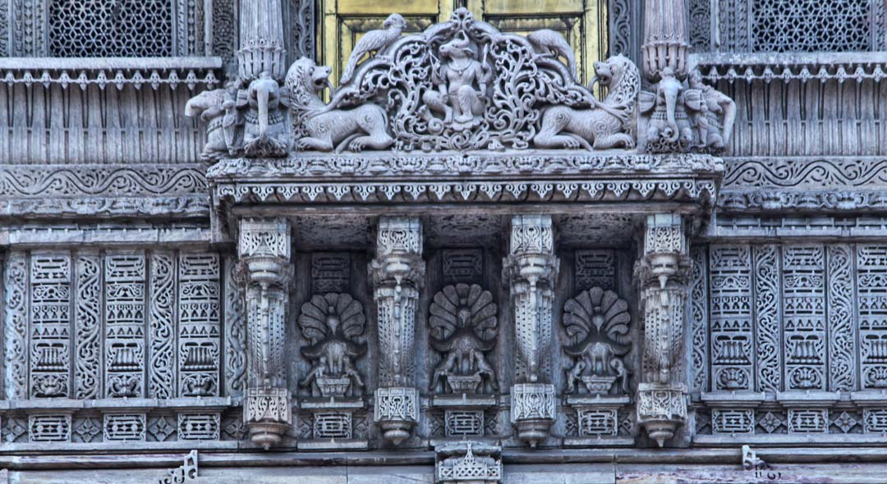
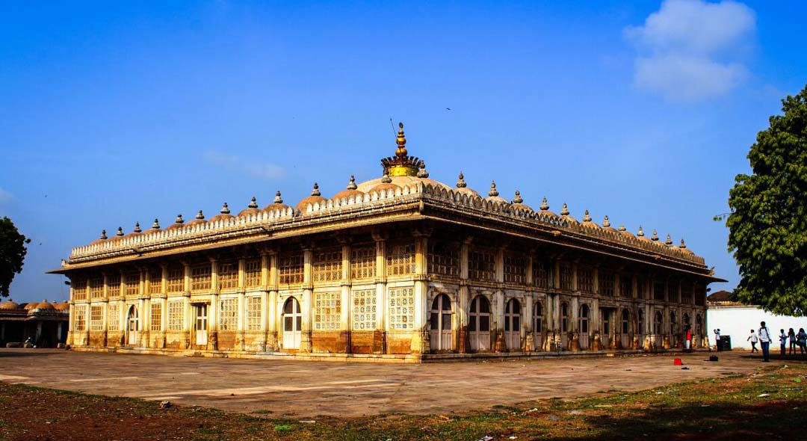
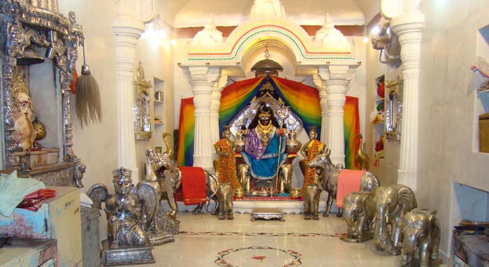
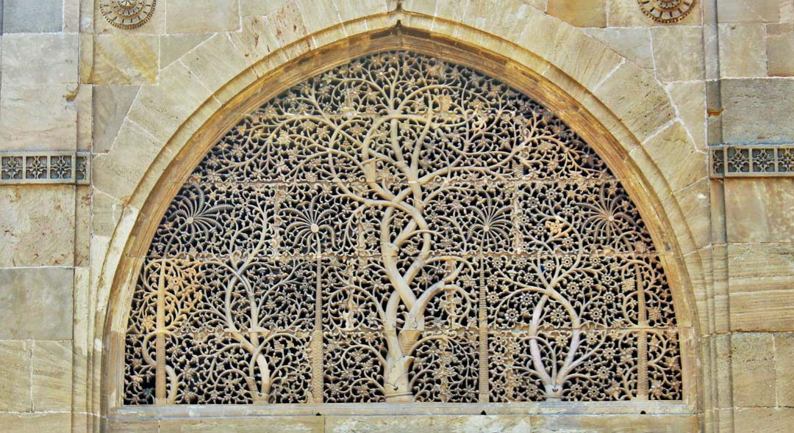
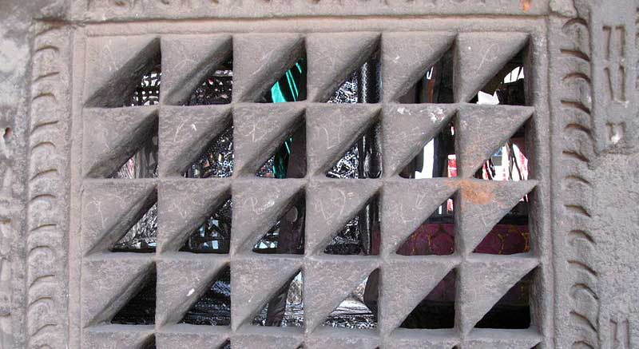

Religious Heritage In Ahmedabad
Ahmedabad has a rich heritage of religious places. They are worth seeing.
Here is a list of those places.
Hathisingh Jain Temple

The Hutheesing Temple was created a hundred and fifty years ago by hundreds of artisans during the time a terrible drought hit Gujarat State in India, compelling hundreds of skilled artisans to migrate to Ahmedabad in search of work. The only means of livelihood for these migrant artisans was the Hutheesing Temple which supported them for a period of two years. The Hutheesing family possessed a Midas touch where commercial enterprise was concerned, and on the other hand, were deeply religious and socially conscientious citizens with a genuine conviction that they were under a moral obligation to share the benefits of their prosperity with the less fortunate fellow human beings. It was this philanthropic conviction that motivated Sheth Hutheesing to liberally donate for religious and social causes. He built a temple in their house known as \'Hutheebhai\'s Wadi\' for his mother Surajba who he was much influenced by. During that time Sheth Hutheesing harboured a more ambitious dream of building a large temple for which he started preliminary building activities but died at age 49, before construction activities could begin. Harkuvarba his wife was well aware how dear the temple project was to her husband and took it upon herself to ensure his dream was realised. She held meetings with architects, contractors, draftsmen, and all concerned while supervising day-to-day construction and keeping a keen eye on every detail of the structure. It took two years and rupees eight hundred thousand to complete the Hutheesing Temple.
Top
Sarkhej Roza

Sarkhej Roza comprises one of the most elegant and unique architectural complexes of Ahmedabad. In its architecture, Sarkhej Roza is an example of the early Islamic architectural culture of the region, which fused Islamic stylistic influences from Persia with indigenous Hindu and Jain features to form a composite “Indo-Saracenic” architectural style. The architectural style of Sarkhej Roza is a precursor to the Mughal period in a true amalgamation of Hindu, Jain, and Islamic styles. Hindu craftsmanship and construction know-how were overlaid on Islamic sense of geometry and scale. The Roza Complex at Sarkhej was built at the advent of Sultanate era. HISTORICAL BACKGROUND At the time when Ahmedabad city was built, which was during the reign of Ahmed Shah (1410-1443 A.D.), Sarkhej was a village with a population consisting of weavers and indigo-dyers who were predominantly Hindu. It became associated with the name of Shaikh Ahmed Khattu Ganj Baksh, a Sufi saint and a friend/advisor to Sultan Ahmed Shah, who in his later years retired to the quiet environment of Sarkhej, away from the city. The saint lived till he was 111 years of age and was greatly venerated during his lifetime. Myths about his miraculous powers are prevalent even today. Life and teachings of Shaikh Ganj Baksh Khattu Upon his death in 1445, the reigning monarch, Mohammed Shah ordered a mausoleum built in his honour, along with a mosque. The construction of these two monuments was completed in 1451 A.D., by his successor Qutb`ud-Din Ahmed Shah. In the latter half of the 15th century, Sultan Mahmud Begada completed the complex by excavating a central tank and adding a number of pavilions and a small private mosque. Sarkhej now became a place of repose and meditation; a summer resort for the royal family. Also, he built a mausoleum for himself and his family opposite to that of the saint, where his son Muzaffar II and his queen, Rajabai were buried.A garden was constructed to commemorate the event.
Top
Bhadrakali Mandir

The Bhadrakali Temple In Ahmedabad was constructed during the rule of Aazam Khan. The Bhadrakali Temple in Ahmedabad was believed to be built by the Marathas in the medieval India.Goddess Bhadrakali is worshiped by its devotee to acquire prosperity and wealth. Being one of the cogent deity in Hindu pantheon, the Bhadrakali Temple at Ahmedabad is visited by hordes of devout from across the country throughout the year. The goddess is worshiped during famous Navaratri Festival which is also the main festival celebrated here with nine days of roars, cheers, dances and colourful outfits. This song and dance festival is the best time to visit this temple as you can dance to the tunes of traditional music, eat hearty food and enjoy to your fullest. Ahmedabad Bhadrakali Temple is worth visiting during this festival of song and dance. You will enjoy by dancing to the tunes of traditional music or eat hearty food if you visit the Bhadrakali Temple during this time.
Top
Sidi Saiyed Mosque

The Sidi Saiyyed Mosque built in 1573 is one of the most famous mosques of Ahmedabad. It was built by Sidi Saeed or Sidi Saiyyed, an Abyssinian in the retinue of Bilal Jhajar Khan, general in the army of the last Sultan Shams-ud-Din Muzaffar Shah III of the Gujarat Sultanate. The mosque was built in the last year of the existence of Sultanate of Gujarat.The mosque is entirely arcuated and is famous for beautifully carved ten stone latticework windows (jalis) on the side and rear arches. The delicate “tree of life” motif has become the distinguishing symbol of Ahmedabad. The central window arch of the mosque, where one would expect to see another intricate jali, is instead walled with stone. This is possibly because the mosque was not completed according to plan before the Mughals invaded Gujarat.
Top
Rani no Haziro

Tombs of Ahmed Shah`s Queens also known as Mughalai Bibi`s Tomb or Rani no Hajiro is a tomb complex near Manek Chowk, Ahmedabad, India. Rani no Hajiro is located near Manek Chowk on the east of the Ahmed Shah`s Tomb. The enclosure is high above the ground entered by a lofty gateway and the courtyard surrounded by a trellised cloister. The walls of the cloister are fitted with carved stone screens. The square open enclosure of 36.58 meters side is probably built in 1445. The courtyard contains eight marble tombs of queens of Ahmed Shah I and other Gujarat Sultanate rulers. They are elaborately carved and inlaid with work of mother-of-pearl and metal. The principal tomb belongs to Mughalai Bibi, the wife of Muhammad Shah II and mother of Mahmud Begada. It is richly carved in white marble, and girt with a Persian inscription in minute relief. An adjacent tomb in black marble, once inlaid with mother-of-pearl, belongs to Mirki or Murki Bibi, the wife of Shah e Alam, the sister of queen and the daughter of Jam of Sindh. These tombs are covered with rich brocade works, the textile style developed during the reign of Ahmed Shah I. The intricate stone tracery and carving is an amalgamation of Hindu, Jain, and Islamic architectural styles. Some Muslim families live inside complex which takes care of the tombs.
Back